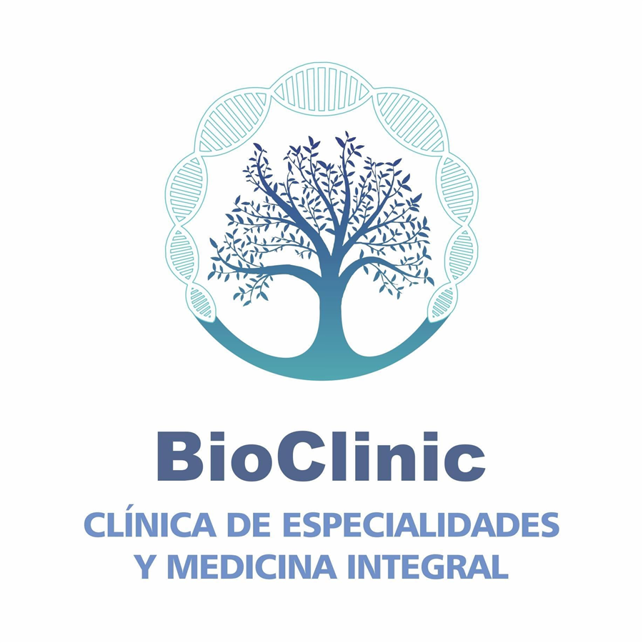

Especialidades médicas
Atención profesional para valorar tus necesidades y orientarte en el cuidado de tu salud.

BioClinicClínica integralAtención médica que mira a la persona completa. Un espacio para acompañarte con conocimiento, cercanía y una visión integral de tu bienestar.

En BioClinic reunimos especialidades médicas y una mirada integral para acompañar tus necesidades de salud con cuidado y claridad.
Atención profesional para valorar tus necesidades y orientarte en el cuidado de tu salud.
Una perspectiva amplia que considera tu bienestar y el contexto de cada persona.
Orientación para tomar decisiones informadas y cultivar hábitos que te hagan bien.
 Ciencia · Escucha · Bienestar
Ciencia · Escucha · BienestarCreemos en una atención que comienza con una conversación. Con tiempo para comprenderte, información para decidir y un equipo que te acompaña.
Un cuidado más humano comienza cuando hay espacio para conocer tu historia.
BioClinic · Clínica de especialidades y medicina integral
Conoce BioClinic y encuentra el acompañamiento que buscas.